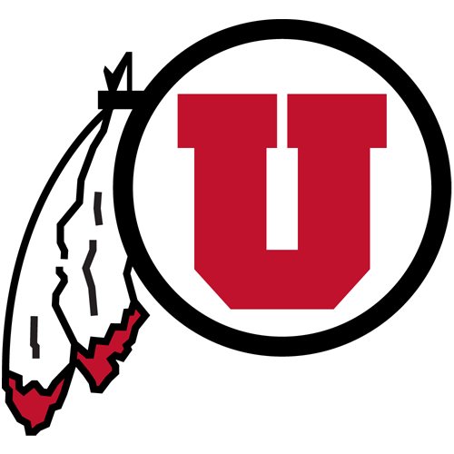
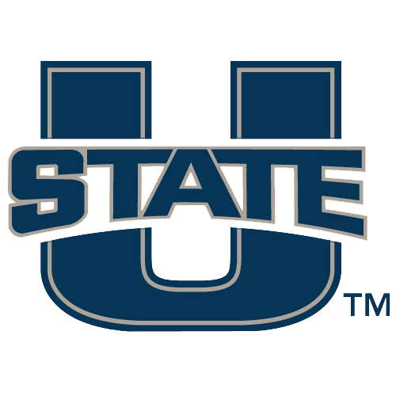
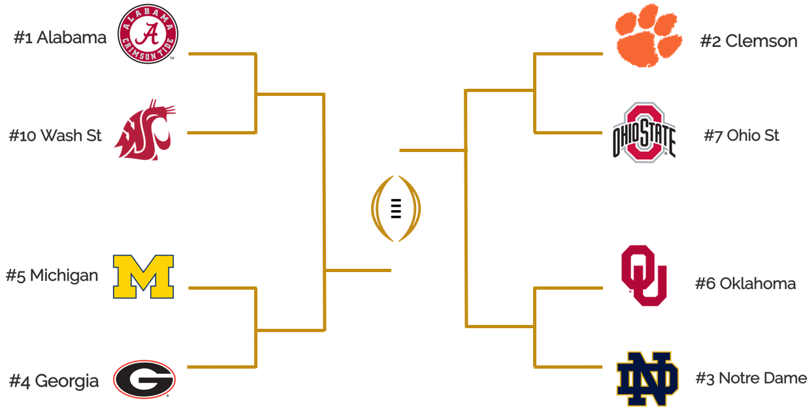

Modernize the College Football Playoff
In an era driven by analytics, its time College Football uses numbers over opinion to select the top playoff teams.
by Abhi Gupta
November 22, 2018
As the final week of the College Football season approaches, commonly referred to as Rivalry week, the 4 teams to be selected for College Football Playoff seem to be as clear cut as ever. For as much as we think we know the best 4 teams, the Week 13 rankings provided by the College Football Playoff Committee once again raises eyebrows. 5 teams with 4 losses are ranked, an all time high. UCF is ranked higher than Ohio State. And LSU, despite 2 losses (including a 29-0 blowout), is ranked above all of them at #7. Perhaps there is merit to each of these decisions, however without explanation or transparency from the committee, the current system is imperfect to many. To understand the purpose of the College Football Playoff, and how to fix this system, we must look at the history of college football's ranking system.
A Short History of Rankings
1936 - 1997: The Poll Era
College Football (CFB) champions were crowned by different polls comprised of a predetermined set of voters. The two most referenced polls were the AP Poll, which was voted upon by members of the media, and the USA Today Coaches Poll, which is voted upon by 62 selected CFB coaches. During this era, these polls would occasionally conflict, crowning two different champions at the end of the season. The best 2 teams were not guaranteed to play one another either, resulting in hypotheticals about who would win a game between the #1 and #2 teams. As other polls started to catch on (CNN Poll, etc), it was clear that the best teams should settle the argument on the field.
1998 - 2013: The BCS
The BCS aimed to resolve the Poll Era problems by selecting the best two teams at the end of the season to play for the title. Using a computerized score, the BCS considered several factors to rank teams. The score was comprised of 3 factors, all weighted evenly: The Coaches Poll, The Harris Poll, and an average of 6 computer rankings, removing the highest and lowest ranks to account for outliers. The Harris Poll was conducted by market research firm that specialized in internet research and replaced the AP Poll after the AP decided they did not want to be included in the BCS Formula. The Harris Poll closed after the 2013 season. The 6 computer rankings referred to were:
- Sagarin: Teams are ranked using the ELO rating system commonly used in chess. Wins and losses are the main criteria, where a winning team played at a higher score than their opponent. Each team is intiially rated by their expected number of wins, and if a team wins more than their expected value, their rating is bumped up. The model also factors in location of the game to account for difficulty.
- Wolfe: Each team is assigned a rating using a Maximum Liklihood Estimator (MLE), and the probability of team A beating team B is simply described as (ARating)/(ARating + BRating). This is described as a Bradley Terry Model.
- Massey: Per his website: Each game "connects" two teams via an equation. As more games are played, eventually each team is connected to every other team through some chain of games. When this happens, the system of equations is coupled and a computer is necessary to solve them simultaneously. The ratings are totally interdependent, so that a team's rating is affected by games in which it didn't even play. The solution therefore effectively depends on an infinite chain of opponents, opponents' opponents, opponents' opponents' opponents, etc. The final ratings represent a state of equilibrium in which each team's rating is exactly balanced by its good and bad performances.
- Colley: Strength of Schedule and Wins matter most, while score differential or opponents' win percentage don't. A simple statistical model without any correction.
- Anderson and Hester: Again, strength of schedule matters. Teams are rewarded for scheduling quality opponents and winning, and score differential does not matter. Teams are further impacted by their opponents' opponents and the overall conference's performance throughout the season.
- Billingsley: The only poll to begin the model on the preseason poll, teams are rewarded based on the snapshot of the teams at the time the game was played. For instance, if Washington plays #5 Oregon, and Washington wins while Oregon tanks for the remainder of the season, Washington is still credited with a win against the #5 team. Losses are penalized heavily, and thus being undefeated in this model pays many rewards.
The BCS Era was the NCAAs first formal acknowledgement of computer rankings, and a step towards reducing any human biases that influenced the polls. The biggest qualm with the BCS was the restriction to 2 teams playing for the championship. With many deserving teams left on the outside (close scores between #2 and #3 for instance), it was time to expand the field.
2014 - Present: The College Football Playoff
The NCAA fixed the BCS problem by establishing the CFP Committee in 2014, which is comprised of 13 rotating members from the CFB community. This committee selects the best 4 teams to play in the championship playoff. Although the field was expanded from 2 to 4 teams, the decision making of the committee has been questioned constantly in the 4 years of its existence, and any chaos in 2018 will provide another challenging selection. In summary of the committee's previous questionable decisions:
- 2014: Ohio State over TCU and Baylor. OSU won the Big 10 title, while TCU and Baylor were left out due to a perceived "weaker" schedule.
- 2016: Ohio State over Penn State. PSU beat OSU in a close contest 27-24, and Penn State won the Big 10 title. However, OSU was selected because of a perceived "stronger" schedule.
- 2017: Alabama over Ohio State. Alabama was the second SEC team selected in the playoff (with #1 Georgia). With only 1 loss but no division or conference title, Alabama was selected over Big 10 champion OSU because of a percieved weaker quality of loss.
In 3 of the 4 years the committee has existed, severe controversy has surrounded the decision made. Inherently built into the structure of this playoff is the exclusion of at least one Power 5 champion. If conference championships will not be considered in selecting the best teams for the national championship, the current selection process is flawed and riddled with the potential for influence by committee members. In an Era where every major sport is embracing data and analytics, College Football should embrace a ranking model based on merit and aim to do away with the biases a board of 13 humans may carry, especially without any transparency of decision making. The BCS poll worked, and simply required an extension to 4 teams to solve the immediate problems with the BCS.
However, to fix the system, two questions need to be addressed: How should opinions and data be balanced? And should we exclude at least 1 Power 5 conference every year?
The Modernized Bowl Playoff (MBP)
In an ideal system, the rankings would capture a complete picture of the college football world. This new system, which we call the Modernized Bowl Playoff (MBP), builds upon the BCS Model. First, the AP Poll and Coaches Poll will account for 1/6 of the score each, or 1/3 total. This ensures that human perception influences the rankings, but is not the driving force. Second, an average of 7 Polls will account for 2/3 of the score, while keeping the highest and lowest score for each team. This will ensure that no singular model will hold more weight than another, and as discussed above, will allow for factors such as snapshot wins (beating a then #2 team, etc) to be included. With the advent of newer, advanced computerized models, the MBP adds the ESPN FPI as the 7th computer ranking to its equation. FPI measures team strength to best predict a team's performance for the rest of the season, based on 10,000 simulations of the remainder of the season.
To address whether a Power 5 conference champion should be excluded, or whether several teams from a given conference should be selected over another, the playoff must be expanded to 8 teams. The conference champion from each of the Power 5 conferences shall be given an automatic berth, and top 3 teams in the rankings who are not already in will receive at large bids. This ensures that Group of 5 teams or a second team from a Power 5 conference get the chance to compete if they are deserving. The 8 teams will then be seeded by their rankings. This new MBP ranking system would produce this Top 25 for Week 13:
| Rank | Team | Score | CFP | Human | Computer |
|---|---|---|---|---|---|
| 1 | 0.970 | 1 | 1 | 2 | |
| 2 | 0.958 | 2 | 2 | 1 | |
| 3 | 0.910 | 3 | 3 | 3 | |
| 4 | 0.887 | 5 | 4 | 4 | |
| 5 | 0.869 | 4 | 5 | 5 | |
| 6 | 0.780 | 6 | 6 | 6 | |
| 7 | 0.715 | 10 | 7 | 9 | |
| 8 | 0.687 | 9 | 8 | 7 | |
| 9 | 0.683 | 7 | 9 | 8 | |
| 10 | 0.580 | 8 | 13 | 10 | |
| 11 | 0.531 | 13 | 10 | 13 | |
| 12 | 0.519 | 12 | 11 | 11 | |
| 13 | 0.454 | 11 | 14 | 14 | |
| 14 | 0.432 | 15 | 17 | 12 | |
| 15 | 0.319 | 18 | 12 | 19 | |
| 16 | 0.304 | 14 | 15 | 17 | |
| 17 |  Utah | 0.302 | 17 | 19 | 15 |
| 18 | 0.296 | N/R | 18 | 16 | |
| 19 | 0.253 | 22 | 21 | 18 | |
| 20 | 0.191 | N/R | 16 | 24 | |
| 21 | 0.184 | 16 | 24 | 20 | |
| 22 | 0.168 | 23 | 23 | 21 | |
| 23 | 0.163 | N/R | 22 | 23 | |
| 24 |  Utah St | 0.133 | 21 | 27 | 22 |
| 25 | 0.085 | N/R | 20 | 36 |
As conference championship games will be played in Week 13, we assume that the highest ranked team from each Power 5 conference will be the champion (although this may drastically change these next 2 weeks). The 8 MBP teams would then look like this:
SEC Champion: #1 Alabama 
ACC Champion: #2 Clemson 
Big 10 Champion: #5 Michigan 
Big 12 Champion: #6 Oklahoma 
Pac 12 Champion: #10 Washington St 
At Large Bid 1: #3 Notre Dame 
At Large Bid 2: #4 Georgia 
At Large Bid 3: #7 Ohio St 
After reseeding, the MBP Playoff bracket would yield these potential matchups:
MBP 2018 Bracket

With the MBP, teams are ranked based on a collection of factors, both computerized and human. There is transparency around the selection of teams, as opposed to the current system that lacks accountability. The perceived strength of a conference does not limit its ability to compete in for a championship by allowing every Power 5 conference a spot in the playoff, and allows for Group of 5 teams (such as UCF, or Independents such as Notre Dame) to play their way into the playoff. Overall, the champion of College Football is not decided in a room by a committee with opinions, but rather on the football field, as it should have always been. ■